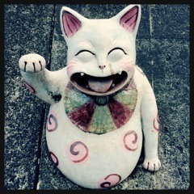

| 2016/03 05 Sat | ひめたん-0o0-その616 |
ジャケ写の時に、きいちゃんと！
あっという間に3月。
アンダーライブ全国ツアーを控え、
14thシングルのリリースを控え、
慌ただしい春になりそうな予感がします。
バタバタしてる時こそ
任されたひとつひとつのことに対して
冷静に、確実に、丁寧に。
3月の私のモットーです！
たった今、気分で決めました！
昨日、TBSラジオ
「金曜JUNK バナナムーンGOLD」に
出演させていただきました！
事前に告知できなくてごめんね～
聞いてくれた方いるかな？
なんと海を越えて南国から生中継。
久々に出演できて嬉しかったですo(^o^)o
I♡Tシャツ集めなければ！
いつか着て写真撮ってどこかに貼ります～
ひとりひとりにひな祭り用意して下さって
嬉しかったです！
昨日オンエアだった「オトナヘノベル」
観てくれたかな？

主人公・美晴役を演じました！
SNSでの"逆炎上"というテーマで
ストーリーが展開されたわけですが
SNSというツールは
便利で、今では誰だって手の届く
身近な存在であるということ、
故に些細なきっかけから自分も
危険に巻き込まれてしまうかもしれない
怖いものでもあるということ
改めて考えさせられる
お話だったと思います( ˇωˇ )
観てくださった方は感想聞かせて下さい！
再放送は3/8 NHK Eテレです。
よろしくお願いします！
日曜の夜は、らじらー！サンデー
ゲストは声優アーツに羽多野渉さん、
乃木坂からは永島聖羅ちゃんが
来てくれます( ˇωˇ )
対決企画が発表されてましたね～
題して「曲紹介対決」！
みなさんの色んなテーマに沿った
曲紹介をする対決だそうですよ
思いついたら送って下さい～
せいらりんへの応援メッセージや
各コーナーのメールも募集中です。
よろしくお願いします！
そうそう、明日のらじらー！内で
14thシングルカップリング曲
「釣り堀」
「憂鬱と風船ガム」
初解禁しますよ！こちらもお楽しみに～♪
おたよりの宛先はこちらから。
毎週金曜日はソニレコ配信日。
新制服です！
3月のお当番は鈴木絢音ちゃんです！
そうだ、今日みんなで
絢音ちゃんのお誕生日お祝いしたよ
17歳おめでとう～＊
月初めのお約束になりつつある
本番前のゆるゆるトーク。
一週目の特権ですね、是非ご覧下さい。
チャンネル登録はこちらから！
あれ？髪型ちょっと似てる♡
～お知らせ～
3/8 オトナヘノベル(再放送)
3/8 BOMBER-E Pナイト
3/12 キャンパスライブ@福島SP
3/27 乃木坂46えいご
BOMBER-E Pナイトでは
ステファニーさん、松田莉奈さんと3人で
常滑の街をお散歩しました！
め～テレ写るよって方は是非
チェックしてみて下さい(´｡•ω•｡`)

開運の招き猫おすそわけ
(＊´・ω・＊)
コメント(1007)
2016/03/05 23:20